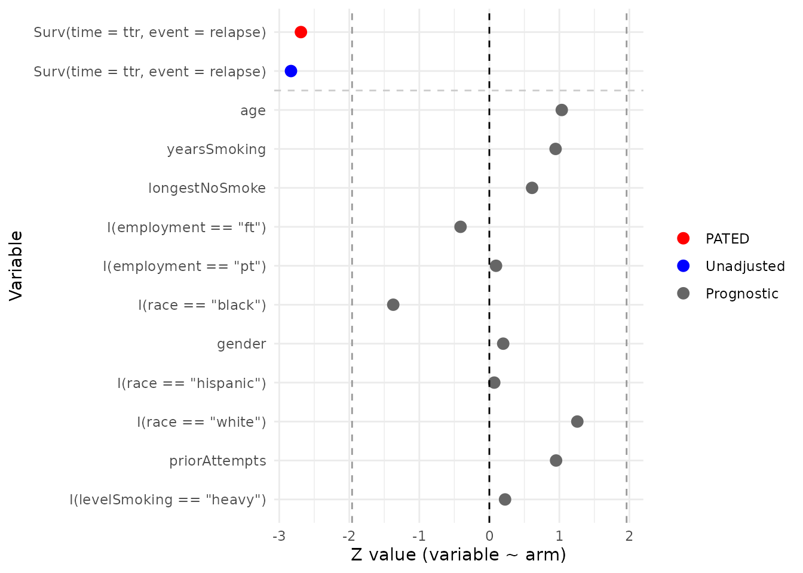
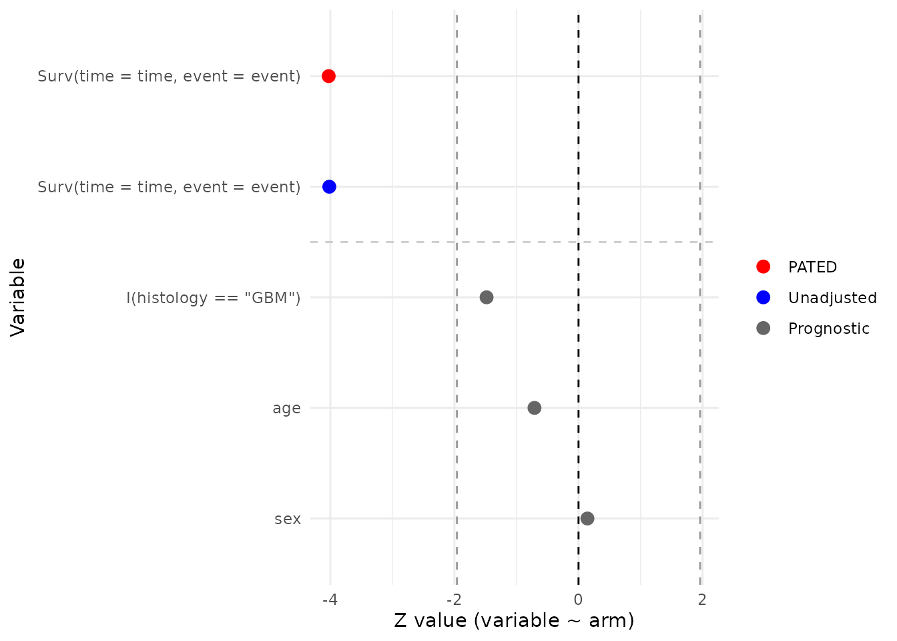
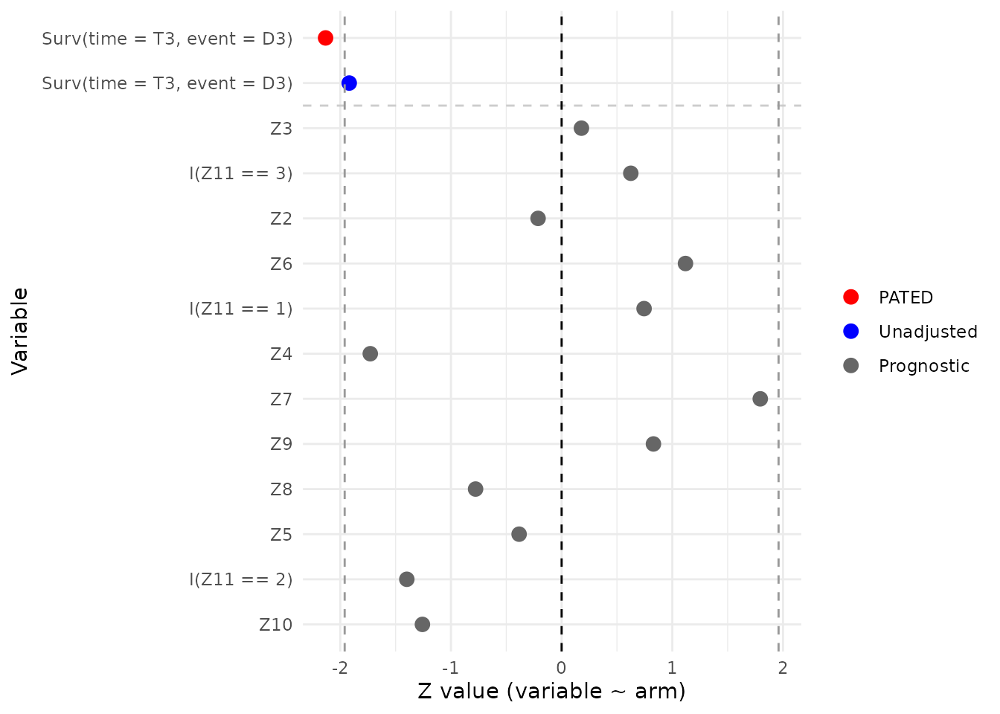
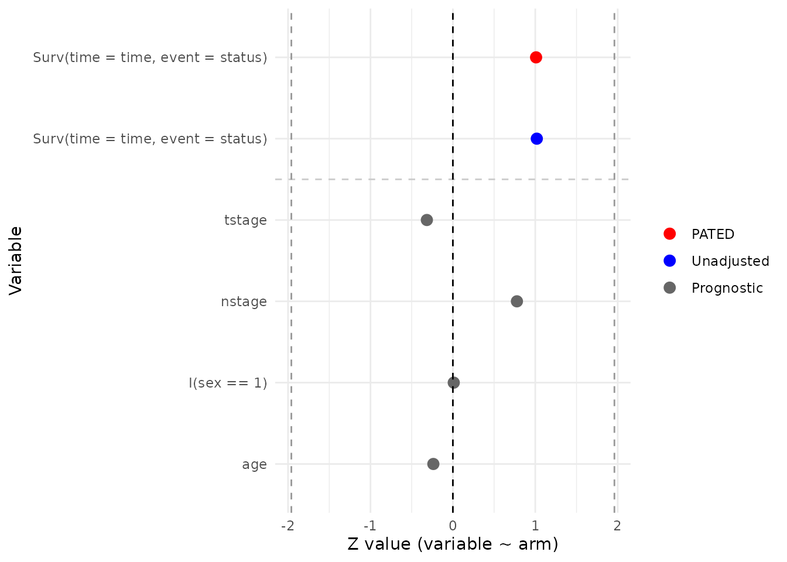
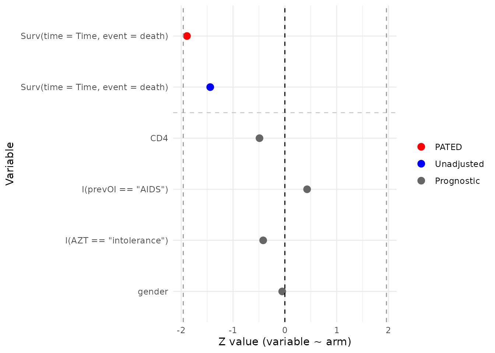
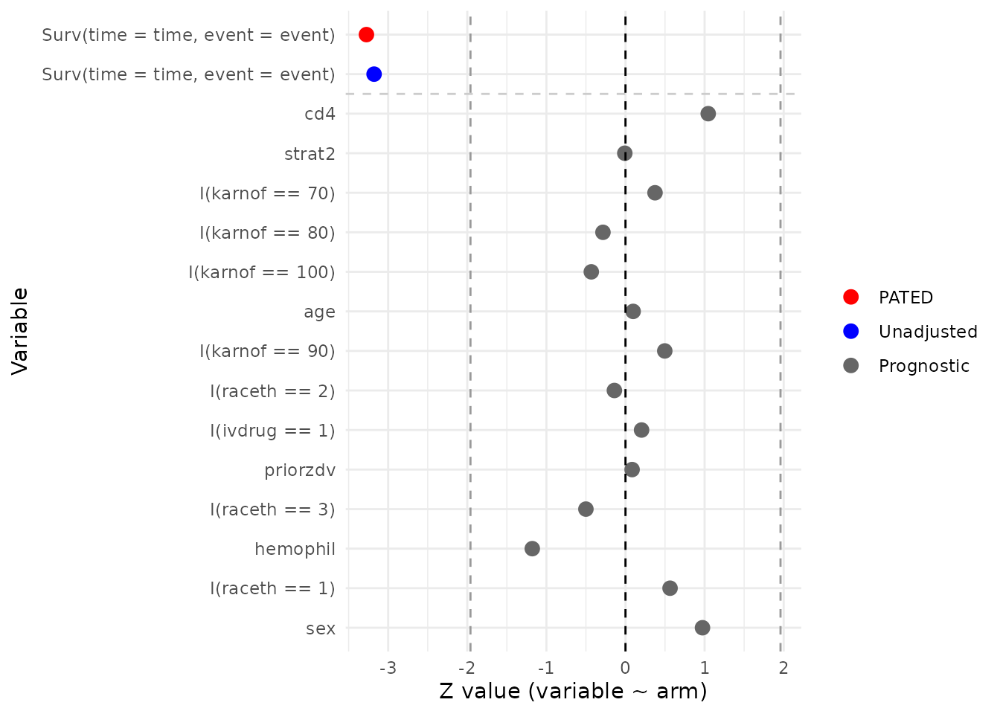
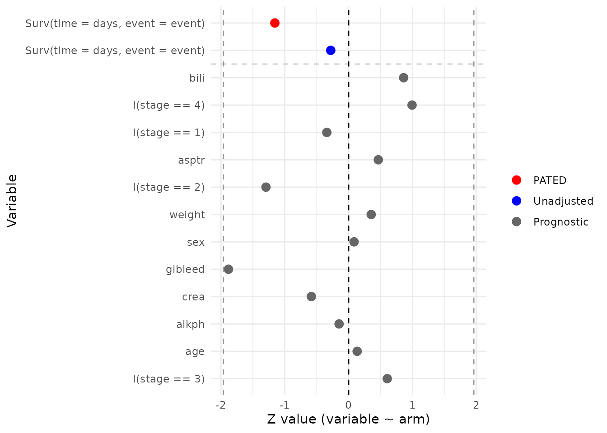
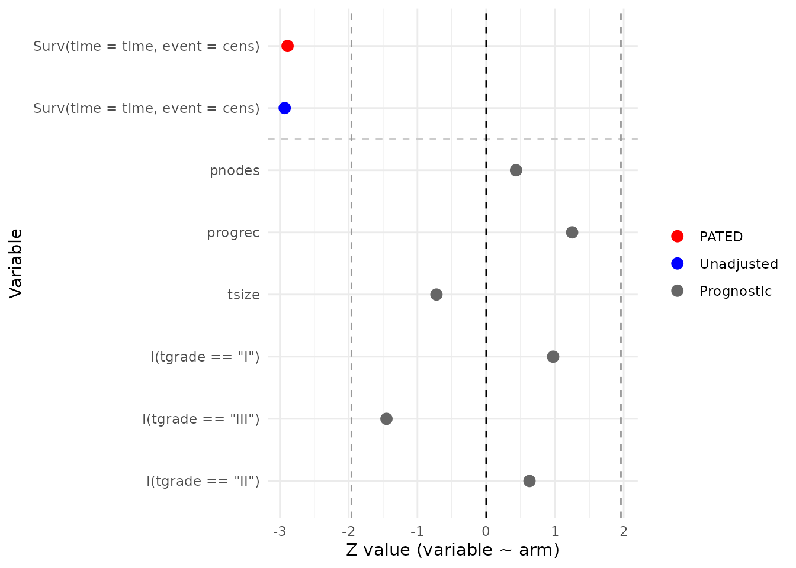

PATED: Prognostic-Assisted Treatment Effect Detection in Randomized Trials
Source:vignettes/pated.Rmd
pated.RmdOverview
In a properly randomized clinical trial, baseline covariates are balanced between treatment arms in expectation. PATED (Prognostic-Assisted Treatment Effect Detection) exploits that fact: by jointly modelling the primary endpoint together with a panel of prognostic baseline covariates and accounting for their joint covariance, the estimated treatment effect on the primary endpoint can be adjusted to remove chance imbalance, shrinking its standard error without introducing bias.
pated() returns a data frame with one row per term. The
first two rows are the adjusted (method = "PATED") and
unadjusted (method = "Standard") estimates of the primary
treatment effect, each with its standard error and p-value. The
remaining rows hold the per-arm regression of each prognostic covariate
on the treatment indicator (method = "Prognostic"), again
with estimates, standard errors, p-values, and the estimated correlation
with the primary endpoint. The function does not report a Wald statistic
or relative efficiency directly; those are simple derived quantities and
we compute them inside this vignette via a small helper.
This vignette walks through eight publicly available randomized trial datasets distributed in CRAN packages. Each example fits a Cox model for the primary time-to-event endpoint together with GLMs for the baseline covariates, all sharing the treatment indicator. Datasets that bundle disparate cohorts or that originate from observational studies are deliberately excluded so that the randomization assumption underlying PATED is satisfied.
Reading the diagnostic plot
Diagnosis is delivered through the plot() method, which
converts each row of the pated object into a Wald
z-statistic (estimate / stderr) and arranges them on a
forest-style chart:
- The red point at the top is the PATED-adjusted z for the primary endpoint.
- The blue point just below is the unadjusted z for the same endpoint.
- The gray points are the per-arm z-statistics for
each baseline covariate (
covariate ~ arm), ordered by their estimated correlation with the primary outcome (strongest at the top).
Dashed vertical lines mark z = 0 and
z = +/-1.96. Two things to look for:
-
Baseline balance. Under randomization the gray
prognostic points should scatter around zero with only a few drifting
past
+/-1.96by chance. A systematic shift to one side, or many covariates outside the +/-1.96 band, suggests imbalance worth investigating before relying on the adjusted estimate. - Power gain. PATED removes the component of the primary effect that is explained by chance baseline imbalance. When the red PATED point sits noticeably further from zero than the blue unadjusted point, the prognostic panel has shaved variance off the primary estimate; when red and blue nearly coincide, the covariates added little.
Relative efficiency helper
Relative efficiency (RE) of PATED over the unadjusted analysis is the
ratio of their sampling variances. We compute it from the two
treatment-effect rows of the pated return:
A value larger than 1 means PATED produced a tighter standard error than the unadjusted analysis on the same data.
library(multipleOutcomes)
library(dplyr)
library(survival)
options(digits = 2)
# pated() requires a subject identifier; add one if the data lack it.
add_pid <- function(df) {
df$pid <- paste0("s-", seq_len(nrow(df)))
df
}
# Derive RE from the two primary-effect rows that pated() returns.
relativeEfficiency <- function(obj){
adj <- obj[obj$method == 'PATED', 'stderr']
unadj <- obj[obj$method == 'Standard', 'stderr']
(unadj / adj)^2
}
printObject <- function(obj){
message(gsub('_', '::', deparse(substitute(obj))))
message(paste0('Relative Efficiency: ',
format(relativeEfficiency(obj), digits = 3)))
print(obj)
}Smoking cessation: asaur::pharmacoSmoking
Steinberg et al. (2009) randomized 125 smokers (61 combination, 64
patch-only) to a triple-medication “combination” arm (nicotine patch
plus bupropion plus a nicotine lozenge) or to a patch-only arm. The
primary endpoint is time to relapse
(ttr/relapse); baseline covariates include
age, smoking history, prior cessation attempts, gender, race, employment
status, and a smoking intensity score.
data(pharmacoSmoking, package = 'asaur')
asaur_pharmacoSmoking <-
pated(
coxph_(Surv(time = ttr, event = relapse) ~ grp, data_index = 1),
glm_(age ~ grp, family = "gaussian", data_index = 1),
glm_(yearsSmoking ~ grp, family = "gaussian", data_index = 1),
glm_(priorAttempts ~ grp, family = "gaussian", data_index = 1),
glm_(longestNoSmoke ~ grp, family = "gaussian", data_index = 1),
glm_(gender ~ grp, family = "binomial", data_index = 1),
glm_(I(race == 'black') ~ grp, family = "binomial", data_index = 1),
glm_(I(race == 'hispanic') ~ grp, family = "binomial", data_index = 1),
glm_(I(race == 'white') ~ grp, family = "binomial", data_index = 1),
glm_(I(employment == 'ft') ~ grp, family = "binomial", data_index = 1),
glm_(I(employment == 'pt') ~ grp, family = "binomial", data_index = 1),
glm_(I(levelSmoking == 'heavy')~ grp, family = "binomial", data_index = 1),
data = list(add_pid(pharmacoSmoking %>%
mutate(grp = ifelse(grp == 'combination', 1, 0))))
)
printObject(asaur_pharmacoSmoking)
#> term family estimate stderr pvalue method
#> 1 Surv(time = ttr, event = relapse) PATED -0.538 0.20 0.0071 PATED
#> 2 Surv(time = ttr, event = relapse) coxph -0.605 0.21 0.0046 Standard
#> 3 age glm 2.170 2.10 0.3011 Prognostic
#> 4 yearsSmoking glm 1.963 2.08 0.3442 Prognostic
#> 5 longestNoSmoke glm 116.806 191.48 0.5419 Prognostic
#> 6 I(employment == "ft") glm -0.149 0.36 0.6809 Prognostic
#> 7 I(employment == "pt") glm 0.054 0.57 0.9241 Prognostic
#> 8 I(race == "black") glm -0.543 0.40 0.1700 Prognostic
#> 9 gender glm 0.074 0.37 0.8432 Prognostic
#> 10 I(race == "hispanic") glm 0.051 0.73 0.9441 Prognostic
#> 11 I(race == "white") glm 0.467 0.37 0.2090 Prognostic
#> 12 priorAttempts glm 15.514 16.28 0.3406 Prognostic
#> 13 I(levelSmoking == "heavy") glm 0.089 0.40 0.8224 Prognostic
#> corr
#> 1 NA
#> 2 1.0000
#> 3 -0.2144
#> 4 -0.1494
#> 5 -0.1463
#> 6 -0.1217
#> 7 0.1133
#> 8 0.0816
#> 9 -0.0740
#> 10 -0.0420
#> 11 -0.0243
#> 12 0.0187
#> 13 -0.0067
plot(asaur_pharmacoSmoking)
Malignant glioma: coin::glioma
Grana et al. (2002) reported a small randomized trial of locoregional
radioimmunotherapy in patients with high-grade glioma (37 patients
total: 18 control, 19 radioimmunotherapy). Patients received standard
therapy with or without adjuvant radioimmunotherapy using
90Y-biotin. The endpoint is overall survival; available
baseline covariates are age, sex, and histology (glioblastoma multiforme
vs. grade III astrocytoma).
data(glioma, package = 'coin')
coin_glioma <-
pated(
coxph_(Surv(time = time, event = event) ~ group, data_index = 1),
glm_(age ~ group, family = "gaussian", data_index = 1),
glm_(sex ~ group, family = "binomial", data_index = 1),
glm_(I(histology == 'GBM') ~ group, family = "binomial", data_index = 1),
data = list(add_pid(glioma %>%
mutate(group = ifelse(group == 'Control', 0, 1),
event = 1 * event)))
)
printObject(coin_glioma)
#> term family estimate stderr pvalue method
#> 1 Surv(time = time, event = event) PATED -1.423 0.35 5.6e-05 PATED
#> 2 Surv(time = time, event = event) coxph -1.829 0.46 5.9e-05 Standard
#> 3 I(histology == "GBM") glm -1.012 0.68 1.4e-01 Prognostic
#> 4 age glm -3.272 4.61 4.8e-01 Prognostic
#> 5 sex glm 0.095 0.66 8.9e-01 Prognostic
#> corr
#> 1 NA
#> 2 1.00
#> 3 0.59
#> 4 0.33
#> 5 0.13
plot(coin_glioma)
Burn-wound infection: iBST::burn
The burn data from Klein and Moeschberger (1997) come from a clinical
trial in which 154 severely burned patients (70 routine bathing, 84
chlorhexidine) were randomized to body cleansing with chlorhexidine
gluconate or to routine bathing care with soap. The primary endpoint is
time to staphylococcus infection (T3/D3).
Baseline covariates include sex (Z2), race
(Z3), percentage of body surface burned (Z4),
location of the burn (head/buttock/trunk/upper-leg/lower-leg/
respiratory: Z5–Z10), and type of burn
(Z11).
data(burn, package = 'iBST')
iBST_burn <-
pated(
coxph_(Surv(time = T3, event = D3) ~ Z1, data_index = 1),
glm_(Z2 ~ Z1, family = "binomial", data_index = 1),
glm_(Z3 ~ Z1, family = "binomial", data_index = 1),
glm_(Z5 ~ Z1, family = "binomial", data_index = 1),
glm_(Z6 ~ Z1, family = "binomial", data_index = 1),
glm_(Z7 ~ Z1, family = "binomial", data_index = 1),
glm_(Z8 ~ Z1, family = "binomial", data_index = 1),
glm_(Z9 ~ Z1, family = "binomial", data_index = 1),
glm_(Z10 ~ Z1, family = "binomial", data_index = 1),
glm_(I(Z11 == 1) ~ Z1, family = "binomial", data_index = 1),
glm_(I(Z11 == 2) ~ Z1, family = "binomial", data_index = 1),
glm_(I(Z11 == 3) ~ Z1, family = "binomial", data_index = 1),
glm_(Z4 ~ Z1, family = "gaussian", data_index = 1),
data = list(add_pid(burn))
)
printObject(iBST_burn)
#> term family estimate stderr pvalue method corr
#> 1 Surv(time = T3, event = D3) PATED -0.582 0.27 0.033 PATED NA
#> 2 Surv(time = T3, event = D3) coxph -0.561 0.29 0.055 Standard 1.000
#> 3 Z3 glm 0.088 0.49 0.858 Prognostic 0.215
#> 4 I(Z11 == 3) glm 0.405 0.65 0.532 Prognostic 0.195
#> 5 Z2 glm -0.083 0.39 0.831 Prognostic -0.149
#> 6 Z6 glm 0.442 0.40 0.263 Prognostic 0.113
#> 7 I(Z11 == 1) glm 0.541 0.73 0.456 Prognostic -0.104
#> 8 Z4 glm -5.483 3.17 0.084 Prognostic 0.074
#> 9 Z7 glm 0.821 0.46 0.073 Prognostic 0.055
#> 10 Z9 glm 0.294 0.35 0.407 Prognostic -0.042
#> 11 Z8 glm -0.256 0.33 0.437 Prognostic -0.035
#> 12 Z5 glm -0.125 0.33 0.701 Prognostic 0.029
#> 13 I(Z11 == 2) glm -0.718 0.51 0.162 Prognostic 0.025
#> 14 Z10 glm -0.448 0.36 0.209 Prognostic -0.013
plot(iBST_burn)
Oropharyngeal carcinoma: invGauss::d.oropha.rec
The d.oropha.rec data describe time to recurrence in 192
patients with oropharyngeal carcinoma (98 on regimen 1, 94 on regimen 2)
who were randomized between two treatment regimens
(treatm). Available baseline covariates are sex, age,
T-stage, and N-stage.
data(d.oropha.rec, package = 'invGauss')
invGauss_d.oropha.rec <-
pated(
coxph_(Surv(time = time, event = status) ~ treatm, data_index = 1),
glm_(I(sex == 1) ~ treatm, family = "gaussian", data_index = 1),
glm_(age ~ treatm, family = "gaussian", data_index = 1),
glm_(tstage ~ treatm, family = "gaussian", data_index = 1),
glm_(nstage ~ treatm, family = "gaussian", data_index = 1),
data = list(add_pid(d.oropha.rec %>%
mutate(treatm = ifelse(treatm == 2, 1, 0))))
)
printObject(invGauss_d.oropha.rec)
#> term family estimate stderr pvalue method
#> 1 Surv(time = time, event = status) PATED 0.16718 0.166 0.31 PATED
#> 2 Surv(time = time, event = status) coxph 0.17374 0.171 0.31 Standard
#> 3 tstage glm -0.03691 0.117 0.75 Prognostic
#> 4 nstage glm 0.13222 0.170 0.44 Prognostic
#> 5 I(sex == 1) glm 0.00065 0.061 0.99 Prognostic
#> 6 age glm -0.37169 1.568 0.81 Prognostic
#> corr
#> 1 NA
#> 2 1.000
#> 3 0.181
#> 4 0.118
#> 5 0.050
#> 6 0.019
plot(invGauss_d.oropha.rec)
ddI vs. ddC in advanced HIV: JM::aids.id
Abrams et al. (1994, NEJM) randomized HIV-infected patients
who had failed or were intolerant to zidovudine (AZT) to didanosine
(ddI) or zalcitabine (ddC). aids.id is the patient-level
(one row per subject) form distributed with the JM package
and contains 467 subjects (237 ddC, 230 ddI). The endpoint is time to
death, and the baseline covariates used here are CD4 count, sex, prior
opportunistic infection status, and AZT history (failure
vs. intolerance).
data(aids.id, package = 'JM')
JM_aids.id <-
pated(
coxph_(Surv(time = Time, event = death) ~ drug, data_index = 1),
glm_(CD4 ~ drug, family = "gaussian", data_index = 1),
glm_(gender ~ drug, family = "binomial", data_index = 1),
glm_(I(prevOI == 'AIDS') ~ drug, family = "binomial", data_index = 1),
glm_(I(AZT == 'intolerance') ~ drug, family = "binomial", data_index = 1),
data = list(add_pid(aids.id %>%
mutate(drug = ifelse(drug == 'ddC', 1, 0))))
)
printObject(JM_aids.id)
#> term family estimate stderr pvalue method
#> 1 Surv(time = Time, event = death) PATED -0.247 0.13 0.059 PATED
#> 2 Surv(time = Time, event = death) coxph -0.210 0.15 0.150 Standard
#> 3 CD4 glm -0.213 0.44 0.624 Prognostic
#> 4 I(prevOI == "AIDS") glm 0.084 0.20 0.668 Prognostic
#> 5 I(AZT == "intolerance") glm -0.080 0.19 0.676 Prognostic
#> 6 gender glm -0.016 0.31 0.959 Prognostic
#> corr
#> 1 NA
#> 2 1.00
#> 3 -0.40
#> 4 0.35
#> 5 -0.23
#> 6 -0.03
plot(JM_aids.id)
ACTG 320 antiretroviral trial:
multipleOutcomes::actg
The actg dataset, redistributed with
multipleOutcomes from the mlr3proba package,
corresponds to the ACTG 320 trial (Hammer et al., 1997, NEJM),
in which patients with CD4 counts below 200 were randomized to a
three-drug regimen (zidovudine + lamivudine + indinavir) or to a
two-drug control. The redistributed file contains 1151 patients (577
control, 574 three-drug). The composite endpoint here is time to an
AIDS-defining event or death, derived from the censor and
censor_d indicators. Baseline covariates include
stratification factor, sex, IV-drug history, race/ethnicity, hemophilia,
Karnofsky score, CD4 count, prior ZDV exposure, and age.
data(actg, package = 'multipleOutcomes')
mlr3proba_actg <-
pated(
coxph_(Surv(time = time, event = event) ~ tx, data_index = 1),
glm_(strat2 ~ tx, family = "binomial", data_index = 1),
glm_(sex ~ tx, family = "binomial", data_index = 1),
glm_(I(ivdrug == 1) ~ tx, family = "binomial", data_index = 1),
glm_(I(raceth == 1) ~ tx, family = "binomial", data_index = 1),
glm_(I(raceth == 2) ~ tx, family = "binomial", data_index = 1),
glm_(I(raceth == 3) ~ tx, family = "binomial", data_index = 1),
glm_(hemophil ~ tx, family = "binomial", data_index = 1),
glm_(I(karnof == 100) ~ tx, family = "binomial", data_index = 1),
glm_(I(karnof == 90) ~ tx, family = "binomial", data_index = 1),
glm_(I(karnof == 80) ~ tx, family = "binomial", data_index = 1),
glm_(I(karnof == 70) ~ tx, family = "binomial", data_index = 1),
glm_(cd4 ~ tx, family = "gaussian", data_index = 1),
glm_(priorzdv ~ tx, family = "gaussian", data_index = 1),
glm_(age ~ tx, family = "gaussian", data_index = 1),
data = list(add_pid(actg %>%
mutate(event = 1 * (censor + censor_d > 0))))
)
printObject(mlr3proba_actg)
#> term family estimate stderr pvalue method
#> 1 Surv(time = time, event = event) PATED -0.6755 0.21 0.0011 PATED
#> 2 Surv(time = time, event = event) coxph -0.6844 0.22 0.0015 Standard
#> 3 cd4 glm 4.3155 4.13 0.2956 Prognostic
#> 4 strat2 glm -0.0011 0.12 0.9930 Prognostic
#> 5 I(karnof == 70) glm 0.1341 0.36 0.7089 Prognostic
#> 6 I(karnof == 80) glm -0.0460 0.16 0.7758 Prognostic
#> 7 I(karnof == 100) glm -0.0537 0.12 0.6655 Prognostic
#> 8 age glm 0.0503 0.52 0.9228 Prognostic
#> 9 I(karnof == 90) glm 0.0587 0.12 0.6194 Prognostic
#> 10 I(raceth == 2) glm -0.0183 0.13 0.8884 Prognostic
#> 11 I(ivdrug == 1) glm 0.0328 0.16 0.8388 Prognostic
#> 12 priorzdv glm 0.1439 1.72 0.9334 Prognostic
#> 13 I(raceth == 3) glm -0.0774 0.15 0.6168 Prognostic
#> 14 hemophil glm -0.4126 0.35 0.2387 Prognostic
#> 15 I(raceth == 1) glm 0.0665 0.12 0.5731 Prognostic
#> 16 sex glm 0.1517 0.16 0.3303 Prognostic
#> corr
#> 1 NA
#> 2 1.0000
#> 3 -0.1939
#> 4 -0.1825
#> 5 0.1489
#> 6 0.1200
#> 7 -0.0961
#> 8 0.0609
#> 9 -0.0467
#> 10 -0.0435
#> 11 0.0398
#> 12 -0.0396
#> 13 0.0264
#> 14 -0.0164
#> 15 0.0048
#> 16 0.0011
plot(mlr3proba_actg)
PBC3 cyclosporin A trial: pec::Pbc3
The PBC3 trial was a European multicentre randomized study (1983–1987) comparing cyclosporin A (CyA) with placebo in 349 patients with primary biliary cirrhosis (173 placebo, 176 CyA). The endpoint analysed here is time to death or liver transplantation. Baseline covariates include sex, histological stage, history of gastrointestinal bleeding, age, and the biochemistry panel (creatinine, bilirubin, alkaline phosphatase, aspartate transaminase, weight).
data(Pbc3, package = 'pec')
pec_Pbc3 <-
pated(
coxph_(Surv(time = days, event = event) ~ tment, data_index = 1),
glm_(sex ~ tment, family = "binomial", data_index = 1),
glm_(I(stage == 1) ~ tment, family = "binomial", data_index = 1),
glm_(I(stage == 2) ~ tment, family = "binomial", data_index = 1),
glm_(I(stage == 3) ~ tment, family = "binomial", data_index = 1),
glm_(I(stage == 4) ~ tment, family = "binomial", data_index = 1),
glm_(gibleed ~ tment, family = "binomial", data_index = 1),
glm_(age ~ tment, family = "gaussian", data_index = 1),
glm_(crea ~ tment, family = "gaussian", data_index = 1),
glm_(bili ~ tment, family = "gaussian", data_index = 1),
glm_(alkph ~ tment, family = "gaussian", data_index = 1),
glm_(asptr ~ tment, family = "gaussian", data_index = 1),
glm_(weight ~ tment, family = "gaussian", data_index = 1),
data = list(add_pid(Pbc3 %>%
mutate(event = ifelse(status == 0, 0, 1))))
)
printObject(pec_Pbc3)
#> term family estimate stderr pvalue method
#> 1 Surv(time = days, event = event) PATED -0.193 0.17 0.25 PATED
#> 2 Surv(time = days, event = event) coxph -0.059 0.21 0.78 Standard
#> 3 bili glm 6.219 7.22 0.39 Prognostic
#> 4 I(stage == 4) glm 0.253 0.25 0.32 Prognostic
#> 5 I(stage == 1) glm -0.107 0.31 0.73 Prognostic
#> 6 asptr glm 2.641 5.68 0.64 Prognostic
#> 7 I(stage == 2) glm -0.336 0.26 0.20 Prognostic
#> 8 weight glm 0.391 1.11 0.72 Prognostic
#> 9 sex glm 0.026 0.30 0.93 Prognostic
#> 10 gibleed glm -0.590 0.31 0.06 Prognostic
#> 11 crea glm -1.150 1.97 0.56 Prognostic
#> 12 alkph glm -12.043 80.43 0.88 Prognostic
#> 13 age glm 0.142 1.06 0.89 Prognostic
#> 14 I(stage == 3) glm 0.168 0.28 0.55 Prognostic
#> corr
#> 1 NA
#> 2 1.0000
#> 3 0.4977
#> 4 0.3681
#> 5 -0.2463
#> 6 0.2231
#> 7 -0.1745
#> 8 -0.1465
#> 9 0.1432
#> 10 0.1358
#> 11 -0.1020
#> 12 0.0986
#> 13 0.0618
#> 14 -0.0013
plot(pec_Pbc3)
GBSG-2 adjuvant breast-cancer trial: pec::GBSG2
The German Breast Cancer Study Group 2 trial (Schumacher et al.,
1994) randomized 686 women with node-positive primary breast cancer (440
without hormonal therapy, 246 with tamoxifen) in a 2x2 factorial of
adjuvant hormonal therapy (tamoxifen, horTh) and
chemotherapy duration. The endpoint is recurrence-free survival;
baseline covariates include tumour size, number of positive lymph nodes,
progesterone receptor level, and tumour grade.
data(GBSG2, package = 'pec')
pec_GBSG2 <-
pated(
coxph_(Surv(time = time, event = cens) ~ horTh, data_index = 1),
glm_(tsize ~ horTh, family = "gaussian", data_index = 1),
glm_(pnodes ~ horTh, family = "gaussian", data_index = 1),
glm_(progrec ~ horTh, family = "gaussian", data_index = 1),
glm_(I(tgrade == 'I') ~ horTh, family = "binomial", data_index = 1),
glm_(I(tgrade == 'II') ~ horTh, family = "binomial", data_index = 1),
glm_(I(tgrade == 'III') ~ horTh, family = "binomial", data_index = 1),
data = list(add_pid(GBSG2 %>%
mutate(horTh = ifelse(horTh == 'yes', 1, 0))))
)
printObject(pec_GBSG2)
#> term family estimate stderr pvalue method
#> 1 Surv(time = time, event = cens) PATED -0.33 0.11 0.0039 PATED
#> 2 Surv(time = time, event = cens) coxph -0.36 0.12 0.0034 Standard
#> 3 pnodes glm 0.19 0.43 0.6641 Prognostic
#> 4 progrec glm 22.29 17.83 0.2113 Prognostic
#> 5 tsize glm -0.82 1.13 0.4693 Prognostic
#> 6 I(tgrade == "I") glm 0.24 0.24 0.3302 Prognostic
#> 7 I(tgrade == "III") glm -0.28 0.19 0.1469 Prognostic
#> 8 I(tgrade == "II") glm 0.11 0.17 0.5288 Prognostic
#> corr
#> 1 NA
#> 2 1.000
#> 3 0.326
#> 4 -0.187
#> 5 0.169
#> 6 -0.159
#> 7 0.123
#> 8 0.006
plot(pec_GBSG2)
Interpreting the output
For each trial, the printed table shows the adjusted PATED estimate
and the unadjusted Standard estimate of the treatment effect on the
primary endpoint, each with its standard error and two-sided p-value,
followed by one row per prognostic covariate. The
relativeEfficiency() helper turns the two standard errors
into a single RE summary, and the plot() method converts
every row into a Wald z-statistic for a visual diagnostic.
Read the two views together: the spread of the gray prognostic z-values shows how well randomization balanced the covariates, while the gap between the blue (unadjusted) and red (PATED) points illustrates the variance reduction that the RE value quantifies. RE close to 1 means the baseline covariates carried little prognostic information beyond what randomization already balanced; RE appreciably above 1 indicates a meaningful efficiency gain.
References
- Abrams DI, Goldman AI, Launer C, et al. (1994). A comparative trial of didanosine or zalcitabine after treatment with zidovudine in patients with human immunodeficiency virus infection. NEJM 330: 657–662.
- Grana C, Chinol M, Robertson C, et al. (2002). Pretargeted adjuvant radioimmunotherapy with yttrium-90-biotin in malignant glioma patients: a pilot study. British Journal of Cancer 86: 207–212.
- Hammer SM, Squires KE, Hughes MD, et al. (1997). A controlled trial of two nucleoside analogues plus indinavir in persons with human immunodeficiency virus infection and CD4 cell counts of 200 per cubic millimeter or less. NEJM 337: 725–733.
- Klein JP, Moeschberger ML (1997). Survival Analysis: Techniques for Censored and Truncated Data. Springer.
- Schumacher M, Bastert G, Bojar H, et al. (1994). Randomized 2x2 trial evaluating hormonal treatment and the duration of chemotherapy in node-positive breast cancer patients. Journal of Clinical Oncology 12: 2086–2093.
- Steinberg MB, Greenhaus S, Schmelzer AC, et al. (2009). Triple-combination pharmacotherapy for medically ill smokers. Annals of Internal Medicine 150: 447–454.